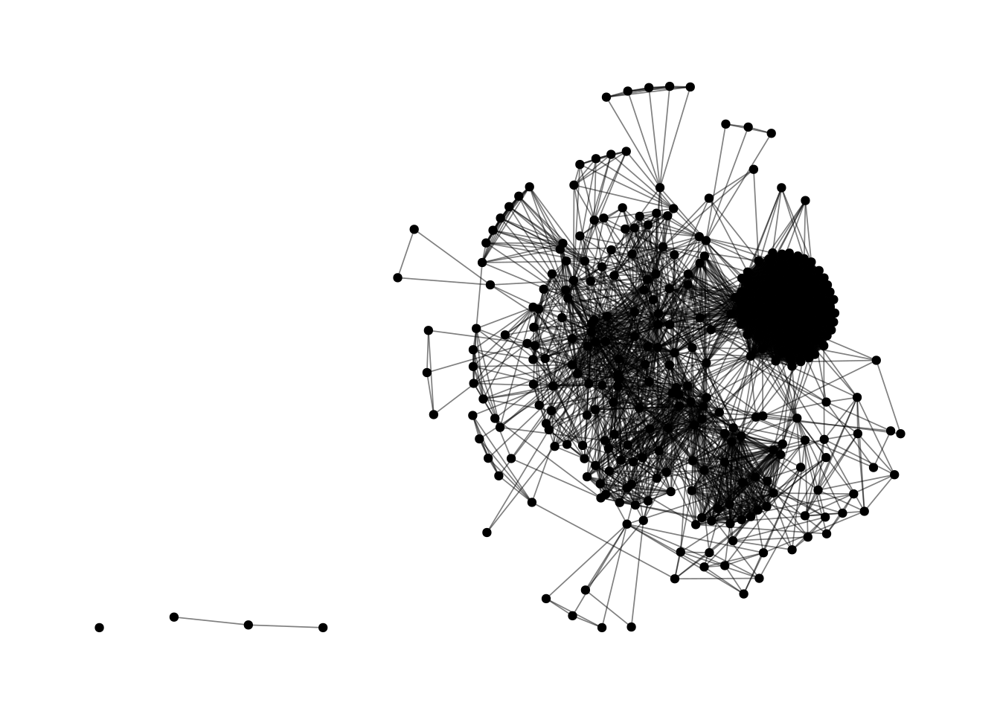
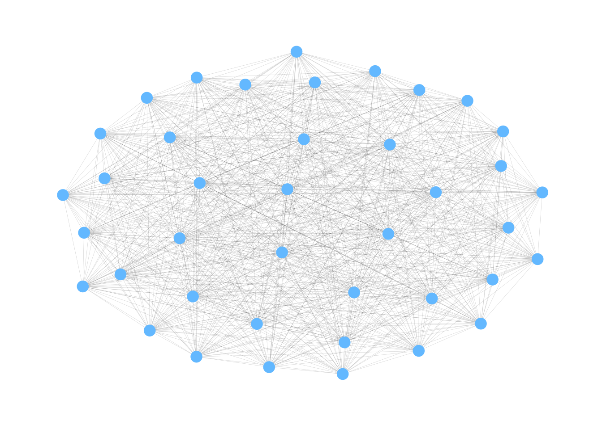
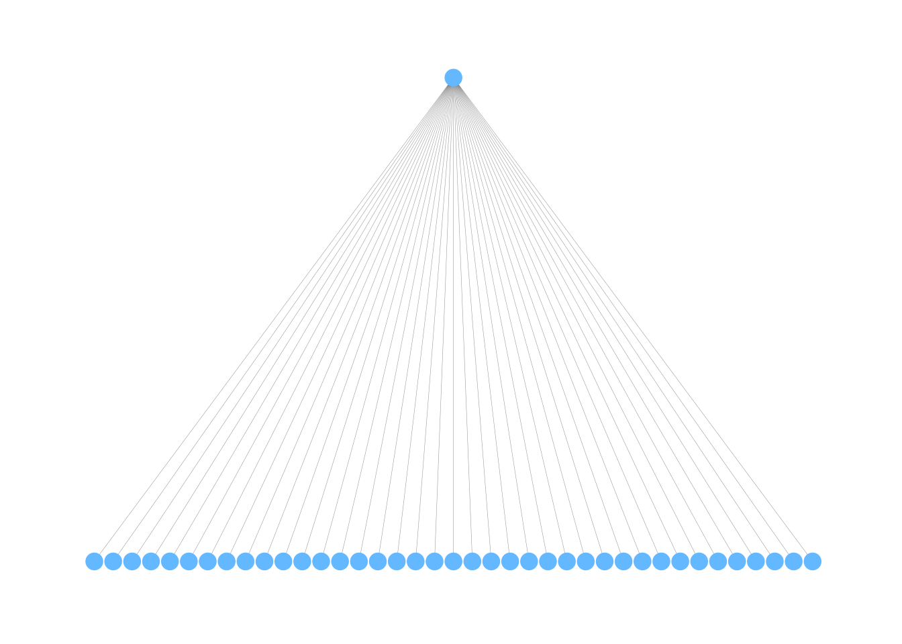
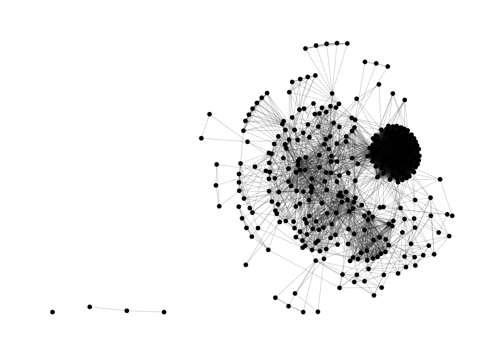
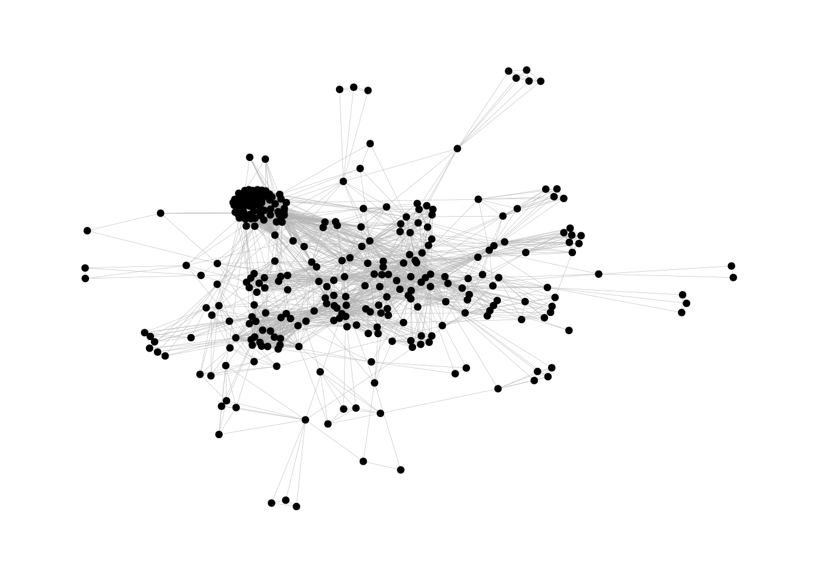
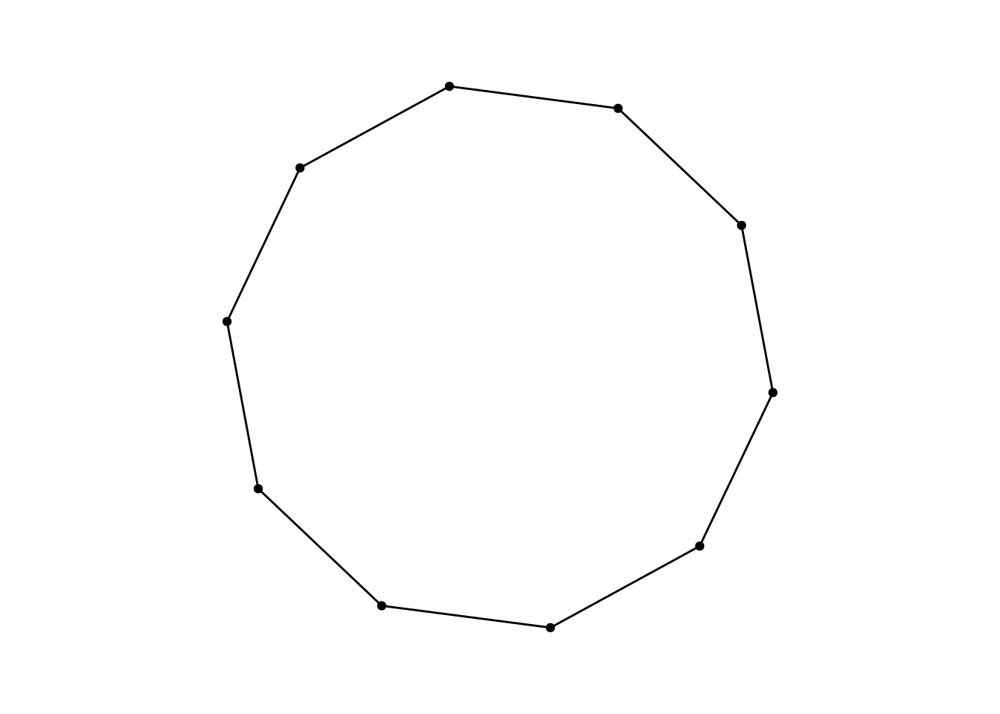
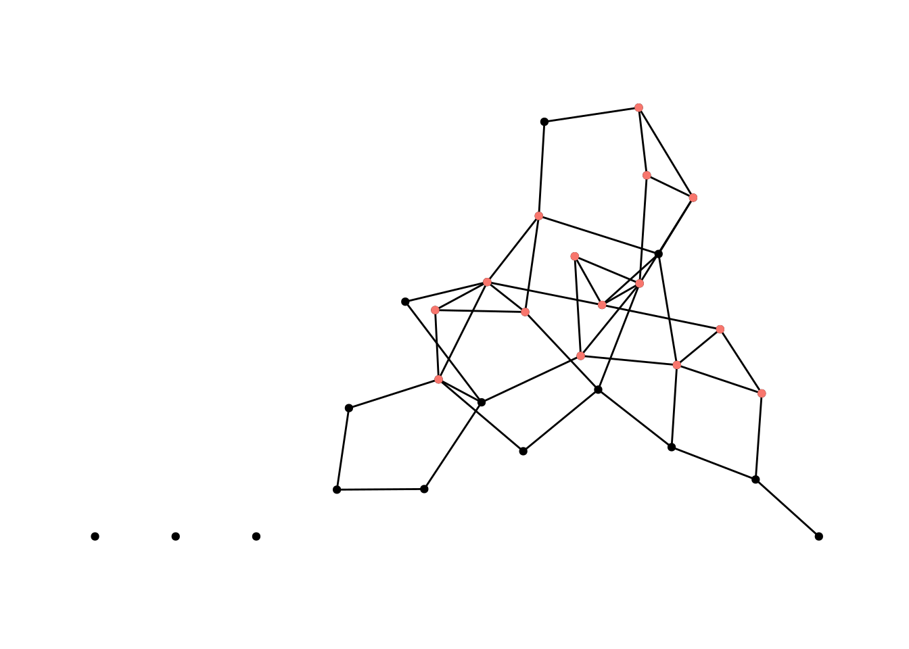
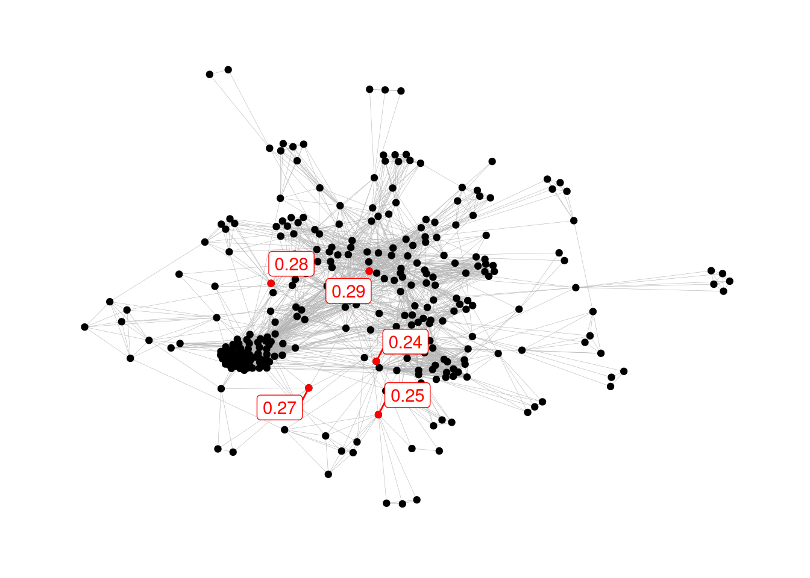
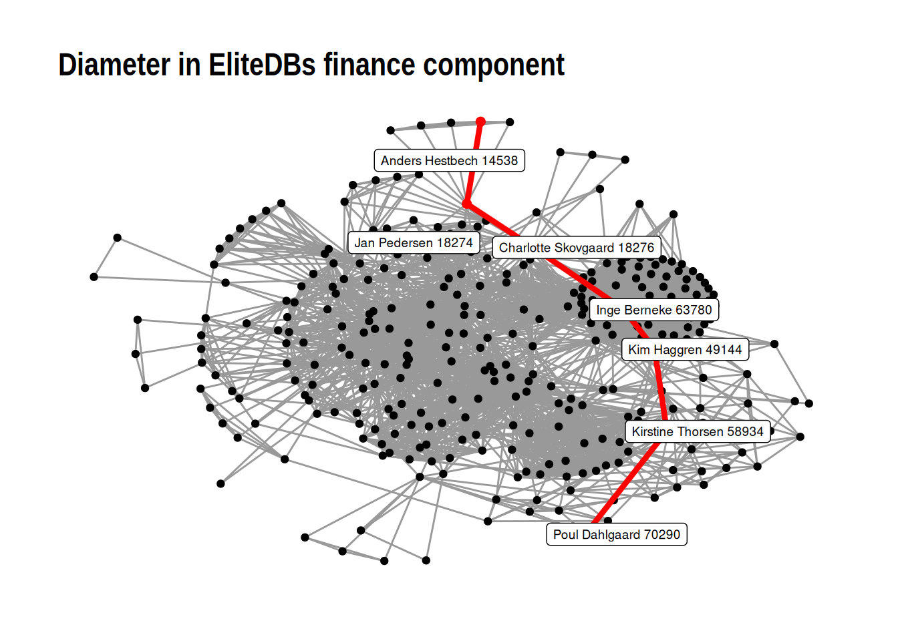
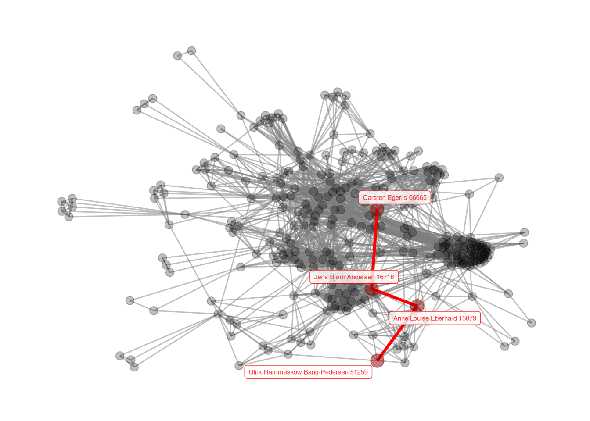

── Attaching core tidyverse packages ──────────────────────── tidyverse 2.0.0 ──
✔ dplyr 1.1.4 ✔ readr 2.1.5
✔ forcats 1.0.0 ✔ stringr 1.5.1
✔ ggplot2 3.5.2 ✔ tibble 3.2.1
✔ lubridate 1.9.4 ✔ tidyr 1.3.1
✔ purrr 1.0.4
── Conflicts ────────────────────────────────────────── tidyverse_conflicts() ──
✖ dplyr::filter() masks stats::filter()
✖ dplyr::lag() masks stats::lag()
ℹ Use the conflicted package (<http://conflicted.r-lib.org/>) to force all conflicts to become errors
Attaching package: 'tidygraph'
The following object is masked from 'package:stats':
filter
Attaching package: 'igraph'
The following object is masked from 'package:tidygraph':
groups
The following objects are masked from 'package:lubridate':
%--%, union
The following objects are masked from 'package:dplyr':
as_data_frame, groups, union
The following objects are masked from 'package:purrr':
compose, simplify
The following object is masked from 'package:tidyr':
crossing
The following object is masked from 'package:tibble':
as_data_frame
The following objects are masked from 'package:stats':
decompose, spectrum
The following object is masked from 'package:base':
union
Attaching package: 'Matrix'
The following objects are masked from 'package:tidyr':
expand, pack, unpackSammenhængskraft, Densitet, kliker og strukturelle huller
Bank sektoren i det danske elitenetværk
For at køre dette script skal du downloade
scriptet: Scriptet - Session3.R
datasættet: Datasættet - danish_elitenetworks2024.csv som du skal lægge i undermappen /data i din r-projekt-mappe
og funktioner: funktionen - triangle_plot.R
funktionen - clique_plot.R som begge lægges i undermappen /functions i r-projekt-mappen
Når de to funktioner ligger der kan de sources
source("functions/clique_plot.R", echo = FALSE)
source("functions/triangle_plot.R", echo = FALSE)Data: Det danske elitenetværk
Vi starter med at indlæse datasættet:
den <- read_csv("data/danish_elitenetworks2024.csv")Fra medlemsdata til netværksdata
Adjacency-matricer
Vi laver en sparse incidence eller bipartite adjacency matrix. Dvs en matrice med individer (name) i rækker og virksomheder m.v. (affiliation) i kolonner. Til det formål bruger vi xtabs() Sparse = TRUE betyder at vi beder funktionen xtabs om at gemme den nye matrice i et hukommelsesbesparende format, hvor den ikke gemmer alle 0’erne (dvs. de ikke-optrædende forbindelser)
bi_adj <- xtabs(formula = ~ person_name + affiliation, data = den_bank, sparse = TRUE)Og laver vha matrix multiplikation \(individ \times individ\) matricen:
adj <- bi_adj %*% t(bi_adj)Jeg vil gerne vide hvilke værdier vores matrice indeholder. Så jeg kan overveje om den er vægtet eller ej. Da det er en sparse matrice vi har lavet kan vi dog ikke lave en simple table(). str() fortæller os hvad dataobjektet indeholder.
glimpse(adj)Formal class 'dgCMatrix' [package "Matrix"] with 6 slots
..@ i : int [1:8889] 0 10 14 16 49 52 54 61 69 80 ...
..@ p : int [1:312] 0 24 51 72 78 81 125 195 231 237 ...
..@ Dim : int [1:2] 311 311
..@ Dimnames:List of 2
.. ..$ person_name: chr [1:311] "Alex Ahrendtsen 58670" "Allan Aaskov 66668" "Allan Polack 14161" "Anders Hestbech 14538" ...
.. ..$ person_name: chr [1:311] "Alex Ahrendtsen 58670" "Allan Aaskov 66668" "Allan Polack 14161" "Anders Hestbech 14538" ...
..@ x : num [1:8889] 5 1 1 1 1 1 1 1 1 1 ...
..@ factors : list()@x indeholder matrices værdier (ud over 0): Så kan vi tælle:
table(adj@x)
1 2 3 4 5 6 7 8 9 10 11 12 13 14 15 16
7818 691 172 82 43 26 10 11 6 3 7 4 3 3 4 2
17 20 34
2 1 1 Vi kan se at der er lidt over to hundrede forbindelser som optræder 2 eller flere gange. Dvs. folk som kender hinanden fra mere flere bestyrelser. Det betyder at vi kunne vægte netværket, men det gør vi ikke. Derfor bruger vi simplify() som sletter multiple edges
Netværks- eller grafobjekt
gr <- adj %>% graph_from_adjacency_matrix(mode = "undirected", diag = FALSE) %>% simplify()
gr <- gr %>% as_tbl_graph()
gr# A tbl_graph: 311 nodes and 4289 edges
#
# An undirected simple graph with 3 components
#
# Node Data: 311 × 1 (active)
name
<chr>
1 Alex Ahrendtsen 58670
2 Allan Aaskov 66668
3 Allan Polack 14161
4 Anders Hestbech 14538
5 Anders Holkmann Olsen 15836
6 Anders Jensen 14468
7 Andreas Munch Møller 51721
8 Ane Arnth Jensen 54733
9 Anette Holstein Nielsen 21504
10 Anja C. Jensen 58972
# ℹ 301 more rows
#
# Edge Data: 4,289 × 2
from to
<int> <int>
1 1 11
2 1 15
3 1 17
# ℹ 4,286 more rowsHvordan ser netværket så ud
gr %>% ggraph() +
geom_edge_link0(edge_width = 0.3, edge_alpha = .5) +
geom_node_point() +
theme_graph()Using "stress" as default layout
Sammenhængskraft - Cohesion
I det følgende skal vi se på forskellige måder at at studere et netværks ‘sammenhængskraft’ eller forbundethed. Hvor sammenfiltret er det?
Densitet: edge_density()
Det mest simple og intuitive mål for ‘sammenfiltrethed’ er at udtrykke det faktiske antal af forbindelser i et netværk som en andel af de teoretisk mulige.
Lad os sige vi har et netværk med \(n=25\) individer. Hvis alle har en forbindelse til alle vil der være: \[n \times (n-1)\] forbindelser, hvis forbindelserne er retningsbestemte, så \(A \rightarrow B \nRightarrow A \leftarrow B\), dvs. forbindelsen A-B medfører ikke nødvendigvis forbindelsen B-A.
og \[(n \times (n-1)) \over 2\] forbindelser, hvis forbindelserne er symmetriske per definition, \(A - B = B-A\).
Det kalder vi det teoretiske max og densiteten er således: \[ {E \over n \times (n-1)} \quad \text{eller} \quad {2E \over n \times (n-1)}, \quad \text{hvor er det faktiske antal forbindelser} \]

Lad os starte med at se hvordan et netværk med fuld densitet ser ud ved at bruge en funktion fra Igraph, der laver et ‘fuldt’ netværk med 40 noder, hvor alle noder er forbundne.
e1 <- make_full_graph(n = 40, directed = FALSE)
e1 <- e1 %>% as_tbl_graph()
e1 %>% ggraph() +
geom_edge_link0(edge_width = 0.1, alpha = 0.2) +
geom_node_point(color = "steelblue1", size = 4) +
theme_graph()Using "stress" as default layout
Når man har et graf- eller netværksobjekt kan densiteten beregnes med edge_density() funktionen fra Igraph.
I det fulde netværk, e1, skulle værdien meget gerne være 1. (Altså 100%, fordi alle ud af de teoretisk mulige forbindelser findes)
edge_density(e1, loops=FALSE)[1] 1Et andet ‘ekstremt’ eksempel er en stjerne-graf, hvor én node er forbundet til alle, mens de andre kun er forbundet til den (og altså ikke til hinanden)
e2 <- make_star(40, mode = "undirected")
e2 <- e2 %>% as_tbl_graph()
e2 %>% ggraph() +
geom_edge_link0(edge_width = 0.1, alpha = 0.4) +
geom_node_point(color = "steelblue1", size = 4) +
theme_graph()Using "tree" as default layout
Her er det kun 39 forbindelser (altså en forbindelser til de 39 andre) ud af de (40*(40-1))/2 mulige
edge_density(e2)[1] 0.05Lad os vende tilbage til det faktiske eksempel med bankfolkene og beregne densiteten af deres netværk
edges <- ecount(gr)
nodes <- vcount(gr)
edges_max <- (nodes * (nodes-1)) / 2
edges / edges_max[1] 0.08897417som jo meget gerne skulle være det samme som med funktionen!!
edge_density(gr)[1] 0.08897417Komponenter
En netværks-komponent er en sammenhængende undergraf. Dvs en del af hele netværket, hvor alle kan nå alle (i x antal led).
Hvis vi plotter netværket, gr, kan vi se komponentstrukturen
gr %>%
ggraph() +
geom_edge_link0(edge_width = .2, edge_alpha = .3) +
geom_node_point(size=1.5) +
theme_graph()Using "stress" as default layout
Fordi, gr, er et tidygraph objekt kan ‘relativt let’ tilføje en variabel på node-delen af vores data, der fortæller hvilken komponent de forskellige noder tilhører. Til det formål skal vi lige aktivere node-delen (activate(noder)) hvorefter vi i mutate kan lave en variabel, jeg kalder comp, hvor group_components() funktionen giver hver node et nummer alt efter hvilken komponent de tilhører.
gr <- gr %>%
activate(nodes) %>%
mutate(comp = group_components())Hvis vi vil vide noget om komponentstrukturen kan vi lave ‘exportere’ node-dataen som tibble (tidydataformat) og kigge på det:
gr %>% activate(nodes) %>% as_tibble() %>% count(comp)# A tibble: 3 × 2
comp n
<int> <int>
1 1 307
2 2 3
3 3 1der er 3 komponenter. Den største har 307 ‘medlemmer’. den næst-største har 3 osv.
vi kan nu regne densiteten i komponenterne:
edge_density(gr %>% filter(comp == 1))[1] 0.09126908edge_density(gr %>% filter(comp == 2))[1] 0.6666667edge_density(gr %>% filter(comp == 3))[1] NaNVisualisering af den største komponenter
gr %>% filter(comp==1) %>%
ggraph(layout = "fr") +
geom_edge_link0(color = "gray70", width = 0.1) +
geom_node_point(size=1.5) +
theme_graph()
Transitivitet —-
I kursets forelæsninger har I diskuteret Granovetters teori om styrken af svage forbindelser og Burts tanker om strukturelle huller. Begge dele taler ind i spørgsmålet om hvor ‘sammenklumpet’ et netværk er og om triadic closure vs. ikke closure betyder.
Med begrebet transitivitet måler måler vi det faktiske antal af lukkede trekanter i forhold til det mulige antal.
Vi kan lige se på to eksempler:
- En ring graf, med ingen triader
g1 <- make_ring(10)
autograph(g1) + theme_graph()
Her er transitiviteten 0
transitivity(g1)[1] 0- Et tilfældigt netværk med x noder og en given densitet (p er sandsynligheden for at der er en forbindelse mellem to noder : altså densiteten)
g2 <- sample_gnp(30, p = 10/100)
autograph(g2) +
geom_node_point(aes(filter = {count_triangles(g2) > 0}, color = {count_triangles(g2) >0})) +
theme_graph() + guides(color = "none")
Alle noder der indgår i en lukket trekant er røde Her er transitiviteten:
transitivity(g2)[1] 0.1034483Vi har indtil nu kigget på transitivitet som et mål for hele netværkets grad af lukning. Høj global transitivitet fortæller os der er mange ‘strong ties’ som skaber closure (og dermed tæthed i netværket). En lav transitivitet peger omvendt på at der er såkaldte ‘weak ties’ så trekanter ikke ‘lukkes’. Det skaber mulighed for at ‘bridge’ strukturelle huller.
Man kan også beregne en lokal transitivitet, som fortæller os hvor mange af de mulige lukkede triader et given node kan indgå som faktisk er lukkede: A kender B og C - kender B og C så hinanden? Hvis ja er triaden lukket ellers ikke.
Lad os vende tilbage til banknetværket og kigge på det:
Banknetværkets globale transitivitet er:
tr_g <- transitivity(gr, type = "global")
tr_g[1] 0.8679886Det er altså ret så lukket og tæt samlet set.
hvis vi ændrer type til ‘local’ får vi den lokale transitivitet:
tr_l <- transitivity(gr, type = "local")
head(tr_l, 20) Alex Ahrendtsen 58670 Allan Aaskov 66668
1.0000000 0.6523077
Allan Polack 14161 Anders Hestbech 14538
0.6052632 1.0000000
Anders Holkmann Olsen 15836 Anders Jensen 14468
1.0000000 0.4296788
Andreas Munch Møller 51721 Ane Arnth Jensen 54733
1.0000000 0.4352941
Anette Holstein Nielsen 21504 Anja C. Jensen 58972
1.0000000 0.5652174
Anja Philip 54857 Anker Laden-Andersen 21210
0.6674877 0.7777778
Anna Bolette Bro 20166 Anna Kromann Aagaard 48889
1.0000000 1.0000000
Anne H. Steffensen 76538 Anne Louise Eberhard 15879
0.6048387 0.3555556
Anne Paulin 58668 Anne-Marie Krog 14678
0.6758621 1.0000000
Annemette Fuglsang 49729 Annika Olsson 53835
1.0000000 0.0000000 For at forstå hvad det betyder kan vi lave et lille hjælpe data, hvor vi for hver node 1) tæller hvor mange forbindelser de har (degree - det vender vi tilbage til næste gang), 2) regner ud hvor mange lukkede trekanter de således teoretisk kan indgå i, og 3) hvor mange trekanter de faktisk indgår i
k <- degree(gr)
possible_triangles <- choose(k, 2)
actual_triangles <- count_triangles(gr)
data.frame(degree = k,
possible = possible_triangles,
actual = actual_triangles,
transitivitet = tr_l) %>% head(20) degree possible actual transitivitet
Alex Ahrendtsen 58670 23 253 253 1.0000000
Allan Aaskov 66668 26 325 212 0.6523077
Allan Polack 14161 20 190 115 0.6052632
Anders Hestbech 14538 5 10 10 1.0000000
Anders Holkmann Olsen 15836 2 1 1 1.0000000
Anders Jensen 14468 43 903 388 0.4296788
Andreas Munch Møller 51721 69 2346 2346 1.0000000
Ane Arnth Jensen 54733 35 595 259 0.4352941
Anette Holstein Nielsen 21504 5 10 10 1.0000000
Anja C. Jensen 58972 24 276 156 0.5652174
Anja Philip 54857 29 406 271 0.6674877
Anker Laden-Andersen 21210 9 36 28 0.7777778
Anna Bolette Bro 20166 6 15 15 1.0000000
Anna Kromann Aagaard 48889 69 2346 2346 1.0000000
Anne H. Steffensen 76538 32 496 300 0.6048387
Anne Louise Eberhard 15879 10 45 16 0.3555556
Anne Paulin 58668 30 435 294 0.6758621
Anne-Marie Krog 14678 7 21 21 1.0000000
Annemette Fuglsang 49729 69 2346 2346 1.0000000
Annika Olsson 53835 2 1 0 0.0000000Vi kan også lige lave en visualisering, hvor vi tager den største komponent og fremhæver de noder der har en lav lokal transitivitet. Dvs indgår i åbne trekanter. Det kommer til at spille en rolle, når vi senere i kurset dykker mere ned i Burts teorier om constraint..
gr %>% filter(comp==1) %>%
ggraph(layout = "fr") +
geom_edge_link0(color = "gray70", width = 0.1) +
geom_node_point(size=1.5) +
geom_node_point(aes(filter = centrality_degree() != 1 & local_transitivity() < .3), color = "red")+
geom_node_label(aes(filter = centrality_degree() != 1 & local_transitivity() < .3, label = local_transitivity() %>% round(2)), color = "red", repel = TRUE)+
theme_graph()
Stilængder gennemsnitlig afstand og diameter —-
Når vi taler om afstande i netværk taler vi om stilængder. Afstanden mellem et par er noder er således defineret ved den korteste sti (shortest path) der findes mellem to noder. Hvis A fx. kan nå D ad to veje: 1) A - C - F - Q - D og 2) A - B - H - D, er 2 den korteste vej og afstanden er tre fordi der er tre steps mellem A og D.
Når vi kender den korteste vej mellem alle par af noder (det kan Igraph beregne) kan vi måle forskellige ting, der kan være beskrivende for netværkets overordnede struktur (eller topologi).
Disse mål giver kun mening for en sammenhængende kompontent, så først skal vi lige subsette vores netværk, så vi kun regner på den største komponent. Vi laver et nyt graf- eller netværksobjekt kun med den største komponent. Fordi gr er et tidygraph objekt kan vi bruge tidyverse-funktioner som fx. filter()
comp1 <- gr %>% filter(comp == 1)igraph funktionen distances giver os en matrice, der viser hvor lang den korteste vej mellem samtlige par af noder er:
dist <- distances(comp1)
dist[1:10,1:10] Alex Ahrendtsen 58670 Allan Aaskov 66668
Alex Ahrendtsen 58670 0 3
Allan Aaskov 66668 3 0
Allan Polack 14161 2 2
Anders Hestbech 14538 4 3
Anders Holkmann Olsen 15836 4 3
Anders Jensen 14468 3 1
Andreas Munch Møller 51721 3 3
Ane Arnth Jensen 54733 2 1
Anette Holstein Nielsen 21504 4 3
Anja C. Jensen 58972 2 2
Allan Polack 14161 Anders Hestbech 14538
Alex Ahrendtsen 58670 2 4
Allan Aaskov 66668 2 3
Allan Polack 14161 0 4
Anders Hestbech 14538 4 0
Anders Holkmann Olsen 15836 4 5
Anders Jensen 14468 2 3
Andreas Munch Møller 51721 3 4
Ane Arnth Jensen 54733 2 4
Anette Holstein Nielsen 21504 4 1
Anja C. Jensen 58972 3 3
Anders Holkmann Olsen 15836 Anders Jensen 14468
Alex Ahrendtsen 58670 4 3
Allan Aaskov 66668 3 1
Allan Polack 14161 4 2
Anders Hestbech 14538 5 3
Anders Holkmann Olsen 15836 0 3
Anders Jensen 14468 3 0
Andreas Munch Møller 51721 4 2
Ane Arnth Jensen 54733 2 1
Anette Holstein Nielsen 21504 5 3
Anja C. Jensen 58972 4 2
Andreas Munch Møller 51721 Ane Arnth Jensen 54733
Alex Ahrendtsen 58670 3 2
Allan Aaskov 66668 3 1
Allan Polack 14161 3 2
Anders Hestbech 14538 4 4
Anders Holkmann Olsen 15836 4 2
Anders Jensen 14468 2 1
Andreas Munch Møller 51721 0 2
Ane Arnth Jensen 54733 2 0
Anette Holstein Nielsen 21504 4 4
Anja C. Jensen 58972 2 2
Anette Holstein Nielsen 21504
Alex Ahrendtsen 58670 4
Allan Aaskov 66668 3
Allan Polack 14161 4
Anders Hestbech 14538 1
Anders Holkmann Olsen 15836 5
Anders Jensen 14468 3
Andreas Munch Møller 51721 4
Ane Arnth Jensen 54733 4
Anette Holstein Nielsen 21504 0
Anja C. Jensen 58972 3
Anja C. Jensen 58972
Alex Ahrendtsen 58670 2
Allan Aaskov 66668 2
Allan Polack 14161 3
Anders Hestbech 14538 3
Anders Holkmann Olsen 15836 4
Anders Jensen 14468 2
Andreas Munch Møller 51721 2
Ane Arnth Jensen 54733 2
Anette Holstein Nielsen 21504 3
Anja C. Jensen 58972 0Et et-tal betyder at de er direkte forbundne, et to-tal at de skal igennem en anden node (en vens ven), et tre-tal at den koreste vej går gennem to andre noder osv.
Når vi kender alle afstande kan vi beregne den gennemsnitlige afstand, eller vi kan beregne den direkte med igraph funktionen mean_distance()
mean_distance(comp1)[1] 2.767772Hvilket fortæller os at alle par af noder ‘i gennemsnit’ kan nå hinanden i lidt under 3 led.
Den længste ‘korteste sti’ i netværket kalder vi netværkets diameter. Det fortæller os noget om hvor langt to noder kan være fra hinanden i en sammenhængende komponent.
diameter på den største komponent i vores banknetværk
diameter(comp1, directed = FALSE)[1] 6er 6. Tætheden i netværket er altså relativt stor, da to bankfolk aldrig er mere end 6 led fra hinanden.
hvilke to personer er så længst fra hinanden
farthest_vertices(comp1, directed = FALSE)$vertices
+ 2/307 vertices, named, from b8870c2:
[1] Anders Hestbech 14538 Poul Dahlgaard 70290
$distance
[1] 6Anders Hestbech, som er bestyrelsesformand i DANSKE ANDELSKASSERS BANK A/S (Bestyrelse) og Poul Dahlgaard, som er med i Arbejdsgruppen om ledelsesbekendtgørelsen for Pengeinstitutter
Den vej Anders skal ‘gå’ for at møde Poul er:
diam <- get_diameter(comp1, directed = FALSE)
diam+ 7/307 vertices, named, from b8870c2:
[1] Anders Hestbech 14538 Jan Pedersen 18274
[3] Charlotte Skovgaard 18276 Inge Berneke 63780
[5] Kim Haggren 49144 Kirstine Thorsen 58934
[7] Poul Dahlgaard 70290 Vi kan visualisere den længste sti:
til de formål skal vi bruge navnene fra diam objektet
diam <- names(diam)Visualisering kræver at vi 1) gemmer en variabel i node-data-delen, der fortæller (TRUE/FALSE) om de ligger på stien:
comp1 <- comp1 %>% activate(nodes) %>%
mutate(diameter = name %in% diam) og 2) at vi gemmer en variabel til egdes, der fortæller (TRUE/FALSE) om de indgår i stien: vi aktiverer først edge-dataen activate(edges) og laver en variabel hvor alle edges har værdien FALSE, i læste skridt bruger vi morph() (morph() er en tidygraf funktion der laver en midlertidig opdeling af grafen). Her giver vi den funktionen to_shortest_path og beder den om kun at tage de edges, der går fra det første (first()) navn i diam (Anders) til det sidste (last()). Det udsnit af edges giver så værdien TRUE og unmorpher grafen igen.
comp1 <- comp1 %>% activate(edges) %>%
mutate(diameter = FALSE) %>%
morph(to_shortest_path, from = .N()$name == first(diam), to = .N()$name == last(diam)) %>%
mutate(diameter = TRUE) %>% unmorph()Med de to variable kan vi plotte den største komponent igen og fremhæve stien mellem de to noder der har den største afstand i data:
comp1 %>%
ggraph() +
geom_edge_link0(aes(filter=diameter==FALSE), color = "gray60") +
geom_node_point(aes(filter=diameter==FALSE), color = "black") +
geom_edge_link0(aes(filter=diameter==TRUE), color = "red", width = 1.5) +
geom_node_point(aes(filter=diameter==TRUE), color = "red", size =2) +
geom_node_label(aes(filter=diameter==TRUE, label = name), nudge_y = -0.3, size =2.5, repel = TRUE) +
labs(title = 'Diameter in EliteDBs finance component') +
theme_graph() Using "stress" as default layout
Ekstra : Den korteste vej mellem to specifikke noder
Lad os sige vi gerne vil finde vise den korteste vej mellem to bestemt noder
node1 <- "Ulrik Rammeskow Bang-Pedersen 51259" # som sidder i finansiel stabilitet
node2 <- "Carsten Egeriis 66665" # adm. direktør i danske bankcomp1 <- comp1 %>% activate(nodes) %>%
mutate(sh_path = FALSE) %>%
morph(to_shortest_path, from = .N()$name == node1, to = .N()$name == node2) %>%
mutate(sh_path = TRUE) %>% unmorph()
comp1 <- comp1 %>% activate(edges) %>%
mutate(sh_path = FALSE) %>%
morph(to_shortest_path, from = .N()$name == node1, to = .N()$name == node2) %>%
mutate(sh_path = TRUE) %>% unmorph()
comp1 %>%
ggraph(layout='fr') +
geom_edge_link0(aes(filter=sh_path==FALSE), color='grey50', alpha=0.5) +
geom_node_point(aes(filter=sh_path==FALSE), color='black', size=3, alpha=0.25) +
geom_edge_link0(aes(filter=sh_path==TRUE), color='red', width=1.2) +
geom_node_point(aes(filter=sh_path==TRUE), color='darkred', size=5, alpha=0.5) +
geom_node_label(aes(filter=sh_path==TRUE, label=name), color='red', size=2, alpha = 0.8, repel = T) +
theme_graph()
Øvelse
Her kan I downloade et script med øvelser til dagens session Scriptet - Session3_øvelser.R
og et datasæt til øvelse: Datasættet - pharma.csv som du skal lægge i undermappen /data i din r-projekt-mappe
Du kan også downloade øvelsen med svar (men prøv først selv :) ) Scriptet - Session3_øvelser_med_svar.R